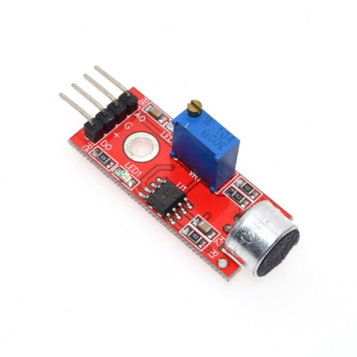

Componente electrónico ampliamente utilizado en proyectos de electrónica y robótica que tiene la capacidad de detectar sonidos y convertirlos en señales eléctricas que pueden ser procesadas por microcontroladores, como el Arduino. Este pequeño y versátil sensor es conocido por su facilidad de uso y su capacidad para captar una amplia gama de frecuencias sonoras.
| Voltaje de operación | Funciona con un rango de voltaje de 3.3V a 5V DC |
|---|---|
| Sensibilidad | Puede detectar variaciones en la intensidad del sonido |
| Salida analógica | Señal analógica que varía en función de la intensidad del sonido detectado |
| Salida digital | La señal digital cambia de estado cuando se detecta un sonido por encima del umbral de intensidad |
| Conexión | Se conecta a una placa a través de cables jumper |
| Compatibilidad | Puede utilizarse con una variedad de placas de desarrollo y microcontroladores, como Arduino, Raspberry Pi, etc. |
| Dimensiones físicas | Longitud aproximada de 35 mm a 50 mm, ancho de 10 mm a 20 mm y una altura de 5 mm a 15 mm |
| Rango de detección | Se basa en su sensibilidad ajustable y en la intensidad del sonido en su entorno |
El Sensor de Sonido KY-038 es un dispositivo ampliamente utilizado en proyectos de electrónica y robótica debido a sus características destacadas. Este sensor es capaz de detectar sonidos en su entorno y convertirlos en señales eléctricas, lo que lo hace ideal para aplicaciones de control por voz y detección de ruido. Es fácil de usar y compatible con microcontroladores como Arduino, lo que lo convierte en una opción popular para aficionados y estudiantes. Además, el KY-038 ofrece ajustes de sensibilidad para adaptarse a diferentes niveles de sonido, lo que lo hace versátil y útil en una variedad de proyectos.
Desde proyectos de control de iluminación y automatización del hogar que responden a comandos de voz, hasta sistemas de seguridad que detectan sonidos anómalos como alarmas de intrusión o detectores de disparos. También se utiliza en juguetes interactivos y proyectos educativos para enseñar sobre sensores de sonido y procesamiento de señales acústicas. Su versatilidad y facilidad de uso lo hacen una herramienta valiosa en una amplia gama de aplicaciones electrónicas.
Primero debes conectar su módulo a una fuente de alimentación de 5V y tierra (GND) y luego conectar su salida analógica o digital a un pin de entrada en un microcontrolador como Arduino. Ajusta la sensibilidad del sensor utilizando el potenciómetro incorporado para adaptarlo al nivel de sonido deseado. Luego, en tu código, puedes monitorear la señal del sensor para detectar cambios en el sonido ambiente y activar acciones correspondientes, como encender luces, activar un motor, o registrar eventos acústicos.